Explanation · v0.14.2
Loupe
Loupe lets a reviewer pin a comment and a screenshot to an element of a running web page. Claude Code reads the comments through an MCP (Model Context Protocol) server, the standard way for an AI agent to call outside tools. A comment stays on its element after you redeploy.
What Loupe is
Loupe is an embeddable visual-feedback platform. A reviewer opens a running product, inspects an element, pins a comment to it and captures a screenshot. The comment stays attached to that element after the markup changes. Claude Code reads the comments through the MCP server and can propose a change, which you review and resolve.
You can run Loupe in three ways:
- The Node server. One process serves the API, the dashboard, a demo page and the SDK bundle on port 8787. It stores data in PGlite, a Postgres database that runs inside the Node process, so you need no external services.
- The Laravel package.
loupekit/laravelstores comments in your app's database and gates access with your app's users. - Offline mode. Without a backend, the widget stores comments in the
browser's
localStorageonly.
The packages
Contract layer
Canonical types, stages and normalizeUrl(). Every package imports from here.
The widget
Runs in a Shadow DOM, an isolated DOM tree, so your page CSS does not change it. Inspect, comment, capture, record, re-anchor.
The API
node:http, Postgres, blob storage, signed-user auth and static hosting.
Triage board
A five-stage board for people, with filters and saved views.
For Claude
MCP server that gives Claude Code 19 tools over your comments.
Any site
Chrome extension in Manifest V3 (MV3), the current Chrome extension format. It runs the SDK core on any page you open.
Loupe Hub
Optional server that routes tickets between the apps of one organization.
Loupe for Laravel
Composer package: widget, your database, gates, dashboard and MCP.
The feedback loop
- A reviewer pins a comment on the live page. It lands in the Queue stage.
- Someone triages it on the dashboard and moves it to To Do.
- Claude Code reads it over MCP, works on it, and moves it to In Review.
- A person checks the result and moves it to Resolved.
An agent may move a comment to In Review. Only a person resolves it.
Author: Mohamed Ashraf Elsaed. Published to npm (@loupekit/*),
GitHub Packages (@mohamed-ashraf-elsaed/*), and Packagist (loupekit/laravel).
Tutorial
Quick start
In this five-minute run you start the local server, pin a comment on the demo page and see it on the dashboard. For the full walk-through, including Claude Code, follow the tutorial Pin your first comment locally.
Prerequisites
- Node 24. Run
node --version. You should seev24. - Git and a terminal.
Steps
- Clone the repository and install the dependencies:
git clone https://github.com/mohamed-ashraf-elsaed/loupe.git cd loupe npm install - Build the packages:
npm run buildYou should see the packages build in the order shared, sdk, mcp, dashboard, extension.
- Create the demo project:
npm run seedYou should see these first two lines:
Seeded project: pk_demo_acme admin key (dashboard ?key= / X-Loupe-Admin): sk_demo_acme_0f3b9cA third line prints the demo user's HMAC. Two values identify a project:
- The project key (
pk_demo_acme) names the project. It is public, so you can put it in a page. - The project secret (
sk_demo_acme_0f3b9c) is private. The seed output calls it the admin key, because the dashboard?key=parameter and theX-Loupe-Adminheader take it. This page calls it the project secret.
- The project key (
- Start the server:
npm startYou should see
[loupe] API + static on http://localhost:8787 (dashboard: /dashboard/ · demo: /demo/). Leave this terminal running. - Open
http://localhost:8787/demo/. You should see the demo page with the Loupe panel open and a short tour.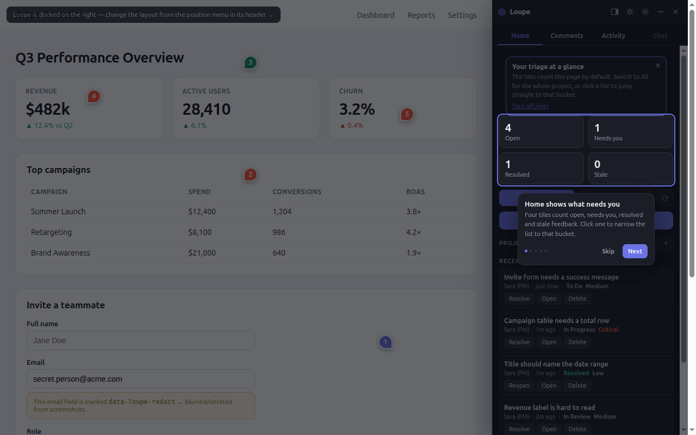
- In the panel, click Inspect. You should see the pointer outline elements as you move it.
- Click the Send invite button on the demo page. You should see the composer open next to the button.
- Type a title and a description. You should see the Comment button turn active.
- Click Comment. You should see a numbered pin on the button.

- Open the dashboard at
http://localhost:8787/dashboard/?key=sk_demo_acme_0f3b9c. You should see your comment as a card in the Queue column.
Troubleshooting
| Symptom | Cause | Fix |
|---|---|---|
| The build or start fails with a syntax error. | Node is older than 24. | Install Node 24 and run npm install again. |
| The dashboard answers 401. | The key is not the project secret. | Use sk_demo_acme_0f3b9c after npm run seed. |
| The demo page cannot load or save comments, and requests answer 401. | LOUPE_DEMO_SECRET was set when you ran npm run seed. The demo page has a fixed HMAC for the default secret. | Stop npm start. Run unset LOUPE_DEMO_SECRET, then npm run seed, then npm start, and reload the page. |
npm start fails because the port is in use. | Another process holds port 8787. | Stop it, or set PORT to a free port. |
Next steps
How-to
Install
Pick the procedure that fits your app. Each procedure here covers the common path. For every option and more troubleshooting, follow the Full guide link at the end of the procedure.
Script tag
Prerequisites:
- A page you can edit.
- A running Loupe backend, such as the local server from the Quick start, or no backend for offline mode.
- A project key and a project secret. The Node server has no route that creates a project:
npm run seedcreates or updates the projectpk_demo_acme, andLOUPE_DEMO_SECRET, if you set it before you seed, chooses its secret.
- On your server, compute the user's HMAC. An HMAC here is a SHA-256 keyed hash of the user id,
made with the project secret. It proves that your server vouches for the user, and the browser
never sees the secret. To try it from a terminal, run:
node -e 'console.log(require("node:crypto").createHmac("sha256", "<PROJECT_SECRET>").update("<USER_ID>").digest("hex"))'Replace
<PROJECT_SECRET>with the project secret and<USER_ID>with the signed-in user's id. Withsk_demo_acme_0f3b9candu_92, you should seedecb2c23961bbcea494b1034aad995b8f30c9a2e517598667b791b73e8752846. In your app, run the samecreateHmaccall on each request and put the result in the page. - Add the browser build before
</body>. Pin the exact version:<script src="https://cdn.jsdelivr.net/npm/@loupekit/sdk@0.14.2/dist/index.global.js"></script> <script> Loupe.init({ projectKey: "<PROJECT_KEY>", user: { id: "<USER_ID>", name: "<USER_NAME>", email: "<USER_EMAIL>" }, userHmac: "<USER_HMAC>", apiBase: "<API_URL>", }); </script>Replace
<PROJECT_KEY>with your project key, for examplepk_demo_acme. Replace the user fields with the signed-in user, for examplesara@acme.com.<USER_HMAC>is the value from step 1.<API_URL>is your backend, for examplehttp://localhost:8787. LeaveapiBaseout to run in offline mode. - Load the page. You should see the Loupe panel open, docked on the right. On a screen wider than 640 px, the first-run tour starts.
Troubleshooting:
| Symptom | Cause | Fix |
|---|---|---|
Nothing appears, and the console shows [loupe] init requires a projectKey or [loupe] init requires user.id. | The option is missing or empty. | Pass projectKey and user.id. |
| The panel opens, but comments do not load, and requests answer 401. | userHmac was not made with this project's secret and this user id. | Compute it again as in step 1. |
Full guide: Add Loupe with a script tag →
npm
Prerequisites: a browser app built with npm, and the project key, HMAC and backend URL described in Script tag.
- Install the package:
npm i @loupekit/sdkYou should see
@loupekit/sdkadded todependenciesin yourpackage.json. - Call
initonce, in the browser only:import { init } from "@loupekit/sdk"; init({ projectKey: "<PROJECT_KEY>", user: { id: "<USER_ID>", name: "<USER_NAME>" }, userHmac: "<USER_HMAC>", // computed on your server apiBase: "<API_URL>", // omit for offline mode }); - Start your app and open it in a browser. You should see the Loupe panel open, docked on the right.
Framework notes: the widget needs document, so call init
once where your app starts. The SDK has no React, Vue or Svelte adapter. In React, call it in an
effect in your root component and return destroy as the cleanup. In Vue 3, call it in
onMounted and call destroy in onBeforeUnmount. You need no router
hook: the SDK follows history changes.
Troubleshooting:
| Symptom | Cause | Fix |
|---|---|---|
ReferenceError: document is not defined during server-side rendering. | init ran on the server. | Call it in a browser-only hook, such as a React effect or Vue onMounted. |
Nothing appears, and the console shows [loupe] init requires a projectKey. | projectKey is missing. | Pass it. |
Full guide: Install with npm →
Laravel
Prerequisites: a Laravel 11, 12 or 13 app on PHP 8.2 or later (Laravel 13 needs
PHP 8.3), with a way for users to sign in. The installer warns you when the app has no
login route.
- Require the package:
composer require loupekit/laravel - Run the installer:
php artisan loupe:installYou should see
Loupe installed. Next steps:. The installer publishes the config, the migrations, the assets andapp/Providers/LoupeServiceProvider.php. - Create the tables:
php artisan migrate - Add
@loupeWidgetjust before</body>in your layout. - With
APP_ENV=local, sign in and load a page. You should see the Loupe panel. This works only in thelocalenvironment, whereallow_in_locallets every signed-in user in. In every other environment the default gates deny everyone. - Grant access outside
local. Inapp/Providers/LoupeServiceProvider.php, list the people in the two gates:Gate::define('loupe:use', function ($user) { return in_array($user->email, ['sara@acme.com']); }); Gate::define('loupe:admin', function ($user) { return in_array($user->email, ['sara@acme.com']); });loupe:useshows the widget.loupe:adminopens the dashboard at/loupe/dashboard. - Deploy, then sign in as a listed user. You should see the Loupe panel.
Troubleshooting:
| Symptom | Cause | Fix |
|---|---|---|
| The widget does not appear. | You are not signed in, you fail loupe:use, LOUPE_ENABLED is false, or the assets are not published. | Sign in, add your email to loupe:use (step 6), check .env, and run php artisan vendor:publish --tag=loupe-assets --force. |
| The dashboard answers 403. | Outside local, your user fails loupe:admin. | Add your email to loupe:admin (step 6). |
Full guide: Install Loupe in Laravel →
Browser extension
Prerequisites: Chrome, Node 24, and a clone of the repository. The extension is loaded from the clone, so you build it first.
- Clone the repository and install the dependencies:
git clone https://github.com/mohamed-ashraf-elsaed/loupe.git cd loupe npm install - Build all packages, including the extension:
npm run buildYou should see the packages build in the order shared, sdk, mcp, dashboard, extension. Run the full build on a fresh clone:
npm run build:extensionalone fails, because the content script bundles@loupekit/sdkfrom itsdist/folder, which is not in git. - Check that the content script exists:
ls packages/extension/content.jsYou should see
packages/extension/content.js. - Open
chrome://extensions, turn on Developer mode, click Load unpacked and selectpackages/extension. You should see Loupe — visual feedback at version 0.14.2. - Open an
http://orhttps://page, click the Loupe icon, and fill in Project key and User id. Fill in API base and User HMAC only if you use a backend. - Click Save settings. You should see Saved ✓.
- Click Start Loupe on this tab. You should see the Loupe panel on the page.
Troubleshooting:
| Symptom | Cause | Fix |
|---|---|---|
npm run build:extension fails to resolve @loupekit/sdk. | The SDK and shared dist/ folders do not exist yet. | Run npm run build. |
| Nothing appears after you save. | Saving does not start Loupe. | Click Start Loupe on this tab. |
Full guide: Use the browser extension →
MCP server
Prerequisites: Claude Code, Node 24, a running Loupe backend, and the project key and project secret.
- Create
.mcp.jsonin the root of the project you open in Claude Code:{ "mcpServers": { "loupe": { "command": "npx", "args": ["-y", "@loupekit/mcp"], "env": { "LOUPE_API": "<API_URL>", "LOUPE_PROJECT_KEY": "<PROJECT_KEY>", "LOUPE_ADMIN_KEY": "<PROJECT_SECRET>" } } } }<API_URL>is your backend, for examplehttp://localhost:8787.<PROJECT_SECRET>is the project secret, for examplesk_demo_acme_0f3b9c. Keep the file out of version control if it holds a real secret. - Restart Claude Code and run
/mcp. You should seeloupelisted.
The published @loupekit/mcp 0.14.0 fails at start with ERR_MODULE_NOT_FOUND.
On 0.14.0, run the server from a clone: set "command": "node" and
"args": ["<ABSOLUTE_PATH_TO_CLONE>/packages/mcp/index.ts"], after
npm install and npm run build:shared in the clone.
Troubleshooting:
| Symptom | Cause | Fix |
|---|---|---|
The server fails with ERR_MODULE_NOT_FOUND. | You run @loupekit/mcp 0.14.0. | Use 0.14.1 or later: set "args": ["-y", "@loupekit/mcp@0.14.1"]. |
loupe is missing from /mcp. | .mcp.json is not in the root of the project you opened. | Move the file there and restart Claude Code. |
How-to
Using the widget
These are the key tasks. The widget guide covers every control.
Open and close the panel
- The panel starts open the first time a page loads Loupe. To close it, click the Close button in the panel header. You should see the round launcher in the corner of the page.
- Click the launcher. You should see the panel open again.
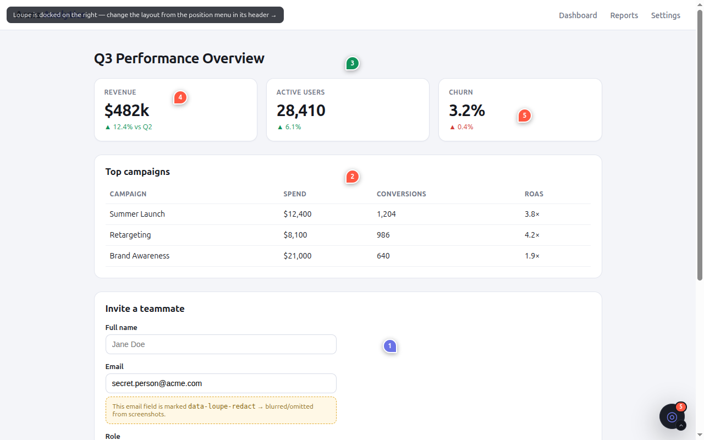
The launcher has a menu with the main tools:
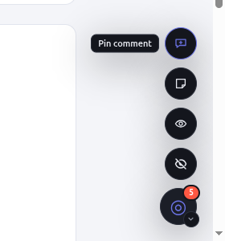
Press Alt+Shift+L to hide or show the launcher. The shortcut does not open the panel.
On the first load on a screen wider than 640 px, a five-step tour starts. You can restart it later with Restart tour in the panel settings menu.
Comment on an element
- Click Inspect and hover the page. You should see the element under the
pointer outlined, with a tip that names it.
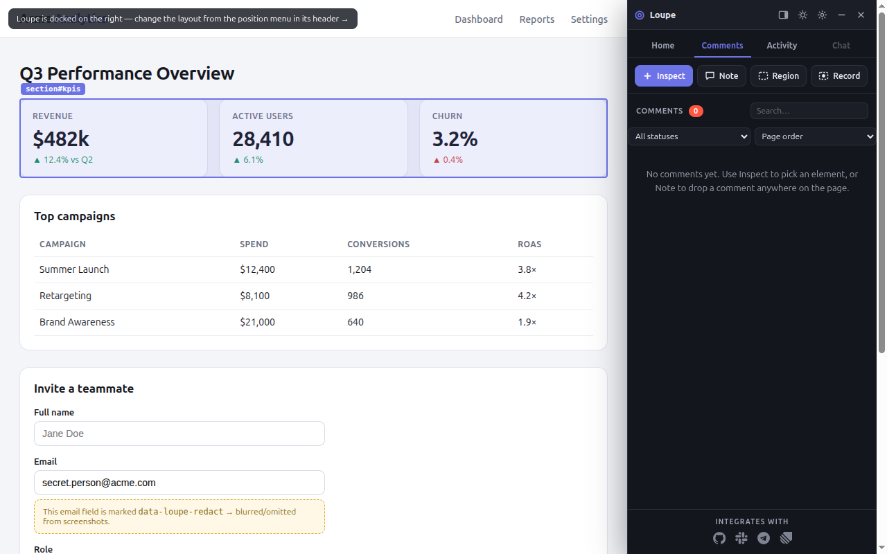
- Click the element. The composer opens next to it. Type a one-line title and a description.
Optional: choose a priority (default Medium) and a change type (default Other). You can attach up
to 10 files: each image up to 10 MB and each video up to 25 MB.
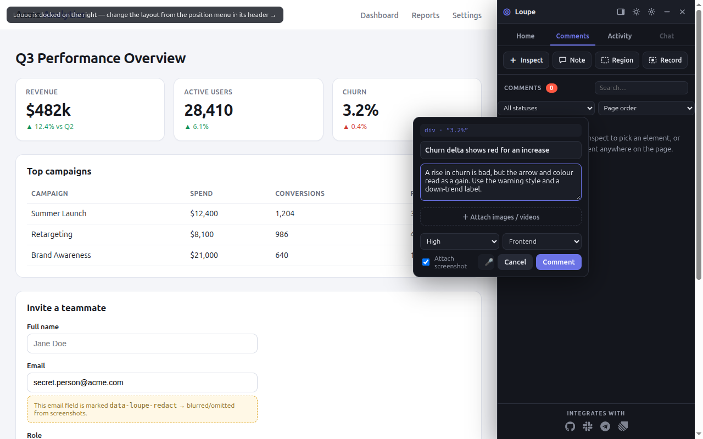
- Click Comment. You should see a numbered pin on the element. New comments start in the Queue stage.
Comment on a region
- Click Region. You should see the pointer change to a crosshair for a drag.
- Drag a rectangle over the area. You should see the composer open next to it.
- Type a title and a description, then click Comment. You should see a numbered pin on the region. Loupe anchors the region to the smallest element that covers at least 60% of it, so the region follows a responsive reflow.
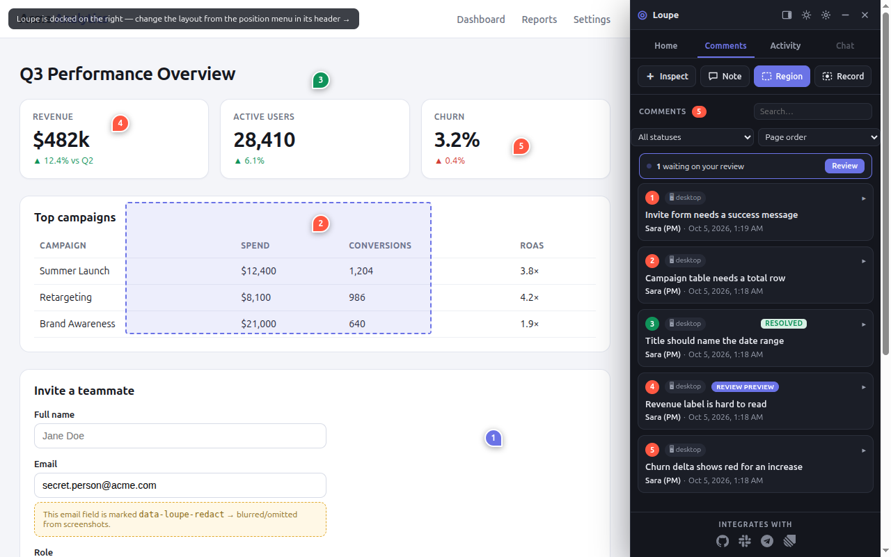
Record a short video
- Click Record.
- Drag a rectangle over the area to record. You should see the browser's screen-share prompt.
- Pick what to share. You should see the recording bar with a Stop button.
- Click Stop when you finish. A recording stops by itself after 20 seconds. You should see the composer open with the video attached.
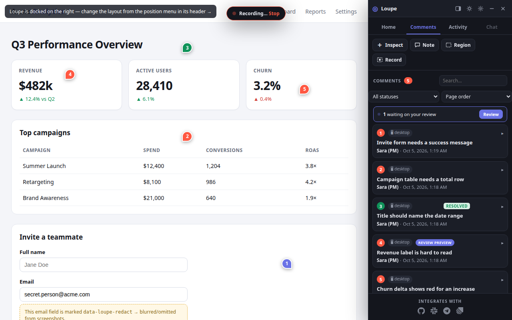
Screen recording works only in desktop browsers. On a phone, the panel shows a Video button instead, which attaches a clip you recorded with the phone's own screen recorder.
To keep sensitive content out of captures, add data-loupe-redact to the element. Loupe
paints it over before the image leaves the browser.
Reply, resolve or delete
- Open a comment in the Comments list. You should see the screenshot, the conversation and a
reply box. Type
@to mention someone. - Click Resolve to close it, or Reopen to bring it back.
- Click Delete. The comment is deleted at once, with no confirmation. In the Laravel package, only the author or an admin can delete.
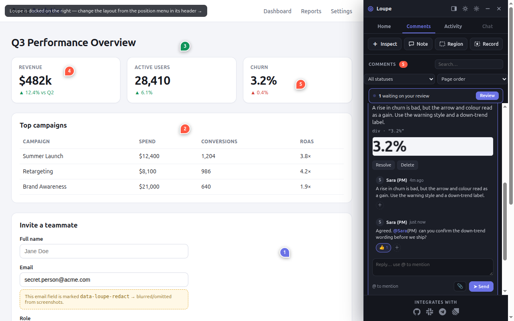
Find comments
The Comments tab lists the comments on the page. Use the search box, the status filter and the sort order (newest first, oldest first, or page order). On This page the default order is page order; on All it is newest first. When the list is sorted by date, it is grouped by day: click a day header to fold that day.
Use the Home tab
Home shows what needs you: tiles such as Needs you and Stale, and a Recent list where each row has Resolve (or Reopen), Open and Delete buttons. On a Home row, Delete asks once: click it, then click Confirm delete within 3 seconds.

Move and style the panel
Dock the panel to the side or let it float, and pick an accent color in Settings.
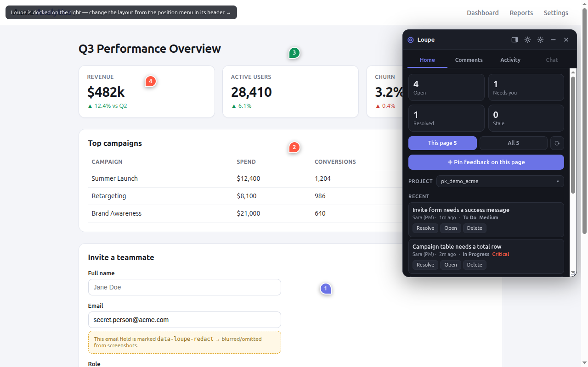
To hide the launcher from code, call hideLauncher(); call showLauncher() to bring it back.
Switch environments
When you pass the environments option, the project popover lets reviewers jump
between environments of the same project.
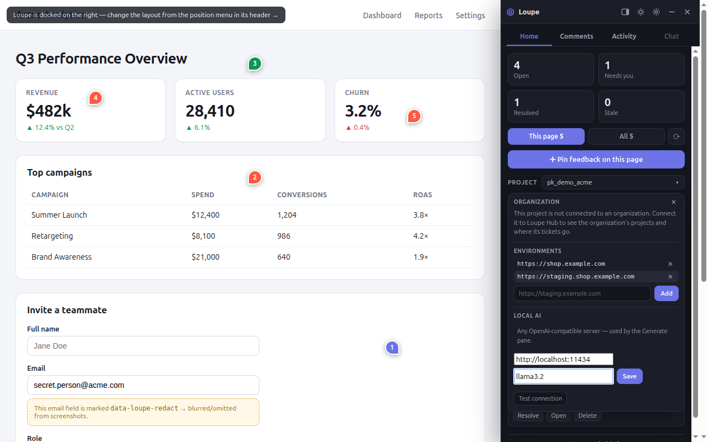
Watch agent activity
The Activity tab shows events from two sources: the backend's activity feed
(GET /v1/activity), and events that your page sends with
Loupe.trackActivity({ kind, label }), together with Loupe's own operations in this
browser. The Laravel package serves the feed, so the tab shows No activity yet until
something happens. The Node server has no activity feed, so with no local events the tab shows
Monitor unavailable, whether or not the MCP server runs.
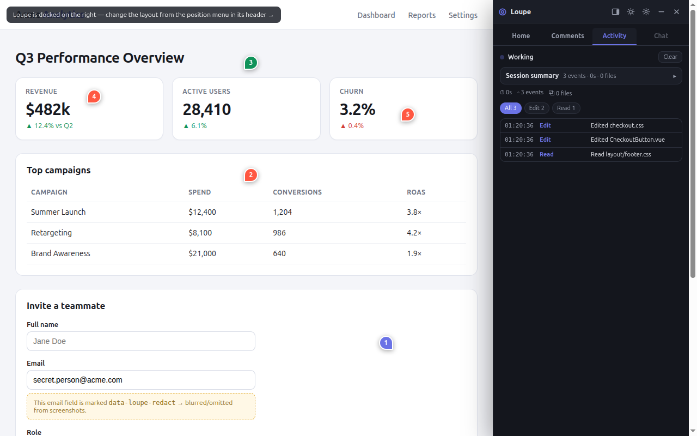
Answer a navigation request
An agent can ask to open another page. The widget asks you first: click Go there or Stay here.
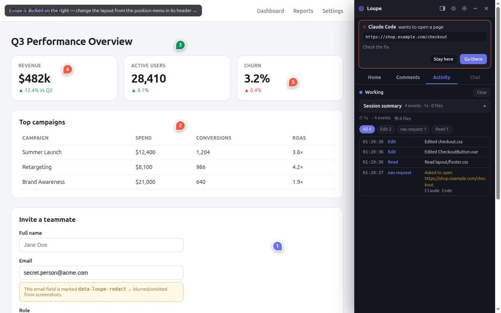
Use Loupe on a phone
The panel adapts to small screens.
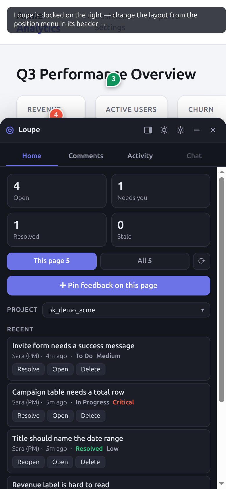
How the panel stays current
The panel re-reads comments, open threads and mentions every 10 seconds. It pauses while the tab is hidden and skips a read while you type.
Troubleshooting
| Symptom | Cause | Fix |
|---|---|---|
| A pin shows a "moved" badge. | The markup changed and no element scored 0.5 or more. | Add a data-testid to the element, then pin the comment again. |
| An attachment is refused. | The file is above 10 MB (image) or 25 MB (video), or you added more than 10 files. | Use a smaller file or fewer files. |
| The Activity tab shows Monitor unavailable. | The backend has no activity feed (the Node server), and nothing has called Loupe.trackActivity yet. | Use the Laravel package for a server feed, or send events from your page with Loupe.trackActivity({ kind, label }). |
Next steps: SDK reference for every init option.
How-to
Dashboard
The dashboard is the triage board for people. On the local server, open
/dashboard/?key=<PROJECT_SECRET>, where <PROJECT_SECRET> is the
project secret.
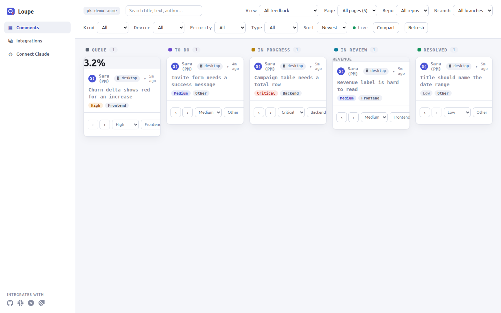
Five stages
| Stage | Meaning |
|---|---|
| Queue | New, not triaged yet. Every new comment starts here. |
| To Do | Triaged and accepted. |
| In Progress | Someone or something is working on it. |
| In Review | A change is ready and waits for a person. |
| Resolved | A person accepted the change. |
Move a card to another stage
Prerequisites: the dashboard is open with the project secret.
- Click a card. You should see its details, with ‹ and › buttons.
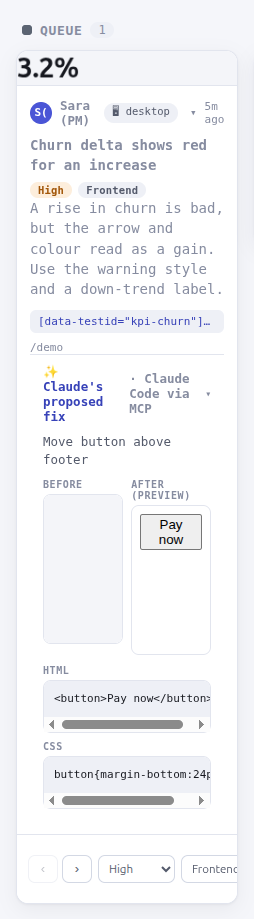
- Click › (Move forward) to move the card to the next stage, or ‹ (Move back) to move it to the previous one. You should see the card in the new column.
To delete a card, click Delete, then Confirm? within 3 seconds.
Filters and saved views
Narrow the board with the search box (title, text, author) and the filters for page, repo, branch, kind, device, priority and change type. Change the order with the sort menu.
The view menu has four saved views: All feedback, Needs you (In Review), Critical only and Not linked to a repo.
Live refresh
The board reloads every 4 seconds, so cards move as people and agents work.
Integrations and Connect Claude
The Integrations page sends lifecycle events to Slack or Telegram. The Connect Claude page shows a ready-to-copy MCP configuration with your API URL and project key.
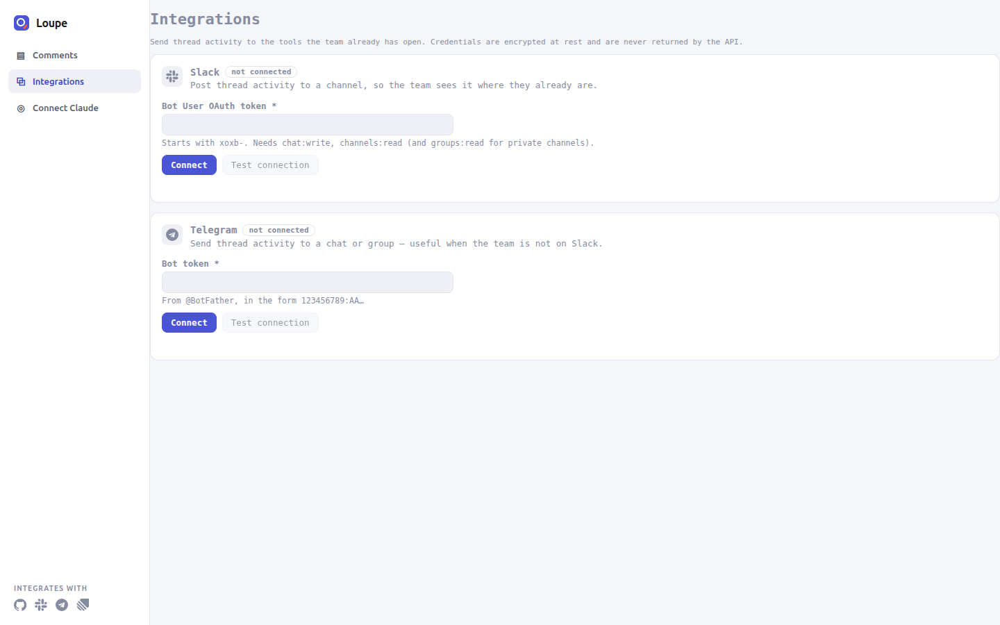
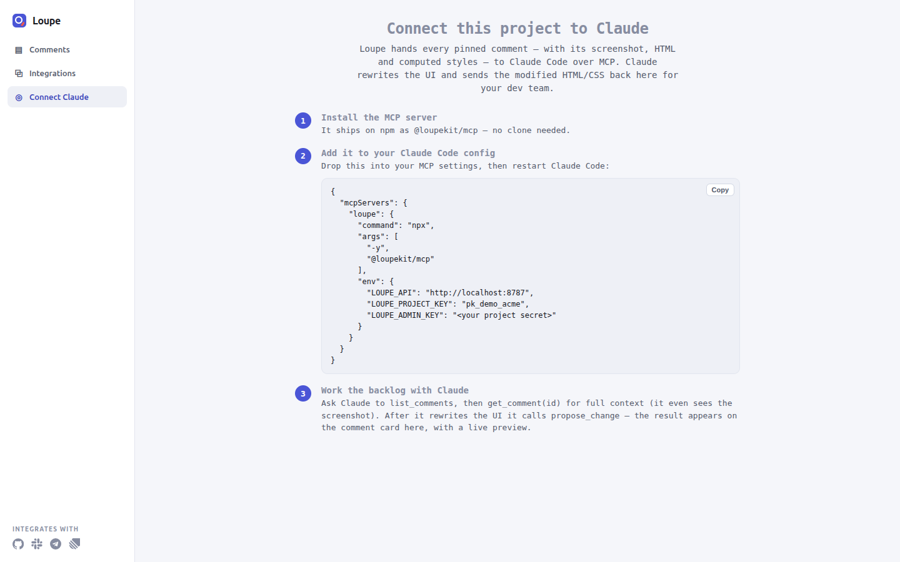
Reference
MCP server
@loupekit/mcp gives Claude Code 19 tools over your comments. It also runs a bridge: a
small local HTTP server, on port 9800 by default, that carries element selections and companion chat
between the widget and the agent, and collects agent events for the activity monitor page. To install it, see Install: MCP server.
Tool groups
| Group | Tools |
|---|---|
| Comments | list_comments, get_comment, update_status, propose_change |
| Selection | get_latest_selection, get_selection_history, get_element_context, find_source_for_selection |
| Companion chat | get_companion_messages, reply_to_companion |
| Activity | get_activity_summary, get_recent_events, get_files_touched, get_dashboard_url, install_agent_hooks |
| Threads and handoff | mark_thread_addressed, add_thread_message, get_thread_conversation, create_pr_for_thread |
mark_thread_addressed always sets In Review, and update_status refuses
resolved, so a person still resolves the comment.
Ask Claude for get_dashboard_url to open the activity monitor:
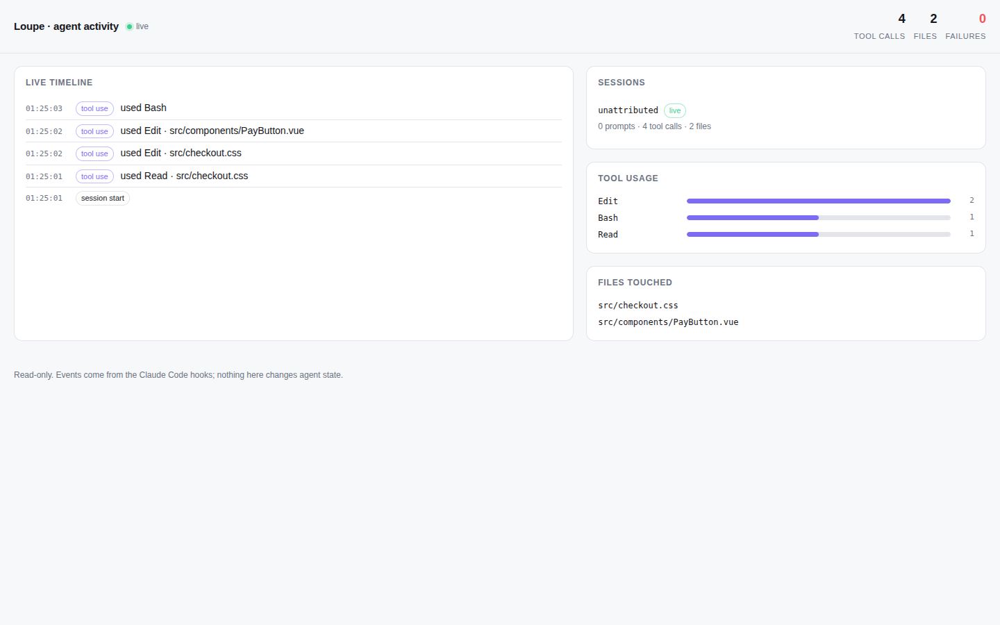
Environment variables
| Variable | Type | Default | Example |
|---|---|---|---|
LOUPE_API | URL | http://localhost:8787 | https://feedback.example.com |
LOUPE_PROJECT_KEY | string | pk_demo_acme | pk_demo_acme |
LOUPE_ADMIN_KEY | string | empty | sk_demo_acme_0f3b9c |
LOUPE_BRIDGE_PORT | number | 9800; 0 turns the bridge off | 9801 |
LOUPE_SELECTION_CAP | number | 50 | 100 |
LOUPE_EVENT_FILE | path | none (in memory) | /tmp/loupe-events.jsonl |
Reference
Browser extension
The extension runs the same SDK core on any http:// or https:// page, with
screenshots taken by the browser itself.
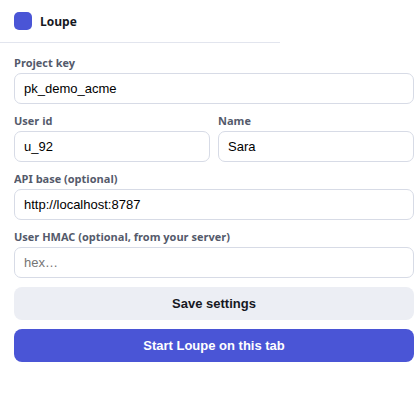
Permissions
| Permission | Why |
|---|---|
activeTab | Access the tab you start Loupe on. |
scripting | Inject Loupe into that tab. |
storage | Remember your settings and per-site show/hide choice. |
contextMenus | Add the right-click menu items. |
Context menus
Right-click a page to start Loupe on what you clicked:
- Comment on this page
- Comment on “selected text”
- Comment on this image
- Comment on this video
- Comment on this audio
- Comment on this link
- Comment on this field
- Show / hide Loupe on this page
Privacy
The extension injects nothing on its own. Loupe runs on a page only after you click
Start Loupe on this tab in the popup or pick one of the right-click menu items.
Without an API base, comments stay in the page's localStorage, in your browser only.
Reference
Loupe for Laravel
loupekit/laravel puts the whole loop inside a Laravel app: the widget, your database,
your users, a dashboard and an MCP server. It needs PHP ^8.2 and Laravel 11, 12 or 13
(Laravel 13 needs PHP 8.3 or later). Install it with the Laravel procedure.
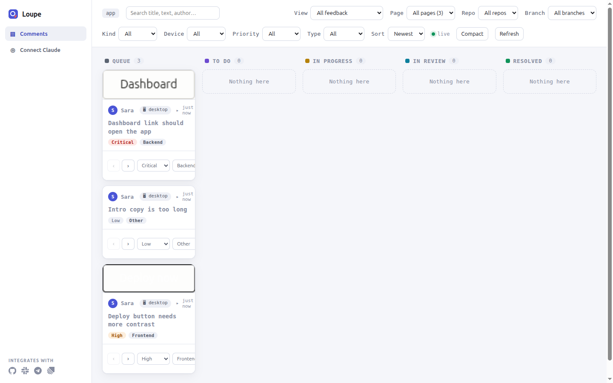
Authorization order
The package checks access in this order and stops at the first answer:
- No signed-in user: deny.
- A closure in
config('loupe.authorize.use')orconfig('loupe.authorize.dashboard'): its answer. - A closure registered with
Loupe::useWhen()orLoupe::adminWhen(): its answer. allow_in_localis true and the environment islocal: allow.- The
loupe:useorloupe:admingate: its answer.
Configuration
Publish the file with php artisan vendor:publish --tag=loupe-config. Common keys:
| Key | Type | Default | Env var | Example |
|---|---|---|---|---|
enabled | bool | true | LOUPE_ENABLED | false |
path | string | 'loupe' | LOUPE_PATH | feedback |
domain | string or null | null | LOUPE_DOMAIN | feedback.example.com |
asset_url | string or null | null | LOUPE_ASSET_URL | https://cdn.example.com |
project_key | string | 'app' | LOUPE_PROJECT_KEY | shop |
guards | list of strings | empty (uses the app default guard) | LOUPE_GUARDS, comma-separated | web,admin |
disk | string | 'public' | LOUPE_DISK | s3 |
allow_in_local | bool | true | none | false |
hub.url | string or null | null | LOUPE_HUB_URL | https://hub.example.com |
hub.project_id | string or null | null | LOUPE_PROJECT_ID | the Hub project id |
hub.project_secret | string or null | null | LOUPE_PROJECT_SECRET | the Hub project secret (psk_…) |
Multiple guards and asset hosts
Set LOUPE_GUARDS to a comma-separated list, such as web,admin, to resolve the
user across several guards. Set LOUPE_ASSET_URL to serve the widget assets from another host.
Loupe Hub
Forwarding to Hub turns on only when all three keys are set: LOUPE_HUB_URL,
LOUPE_PROJECT_ID and LOUPE_PROJECT_SECRET. See Loupe Hub.
MCP server
The package registers an MCP server named loupe when laravel/mcp is
installed. It has four tools: list-comments, get-comment,
propose-change and update-status.
- Install
laravel/mcp:composer require laravel/mcp:^0.8 - Create
.mcp.jsonin the root of your Laravel app:{ "mcpServers": { "loupe": { "command": "php", "args": ["artisan", "mcp:start", "loupe"] } } } - Open the app folder in Claude Code and run
/mcp. You should seeloupelisted, with the four tools above.
Troubleshooting
| Symptom | Cause | Fix |
|---|---|---|
config:cache fails with "non-serializable". | A resolver is a closure. | Use a class name for user_resolver and people_resolver. |
| The widget works locally but not in production. | allow_in_local allowed everyone in local. | Define the loupe:use and loupe:admin gates. |
Explanation and how-to
Loupe Hub
Hub is an optional, separate server that moves a comment from the app where it was written to the app that should handle it. It routes only between apps of the same organization, and it does not store tickets.
Concepts
| Term | Meaning |
|---|---|
| Organization | Holds members, an optional allowed email domain, and projects. |
| Owner / member | Owners change everything. Members view and submit. |
| Project | One connected app, with a Hub project secret (psk_) and a webhook signing secret (whs_). The Hub project secret is not the Loupe project secret. |
| Inbound URL | Where a project receives tickets, for example https://tracker.example.com/loupe/v1/hub/inbound. |
| Destination | The project that a project's tickets go to. |
Start Hub and create a project
Prerequisites: a clone with npm install done, and a Google OAuth
client id. Without GOOGLE_CLIENT_ID, the sign-in page says it is not configured and
sign-in answers 503.
- Start Hub with your client id:
GOOGLE_CLIENT_ID=<GOOGLE_CLIENT_ID> npm run start:hub<GOOGLE_CLIENT_ID>is the client id of your Google OAuth client. You should see[hub] Loupe Hub on http://127.0.0.1:8790. - Open
http://127.0.0.1:8790/and sign in with Google. You should see the Organizations page.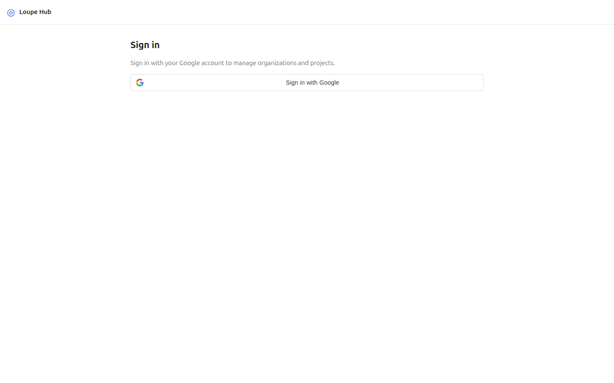
- Type a name, for example
Acme, and click Create. You should see the new organization in the list.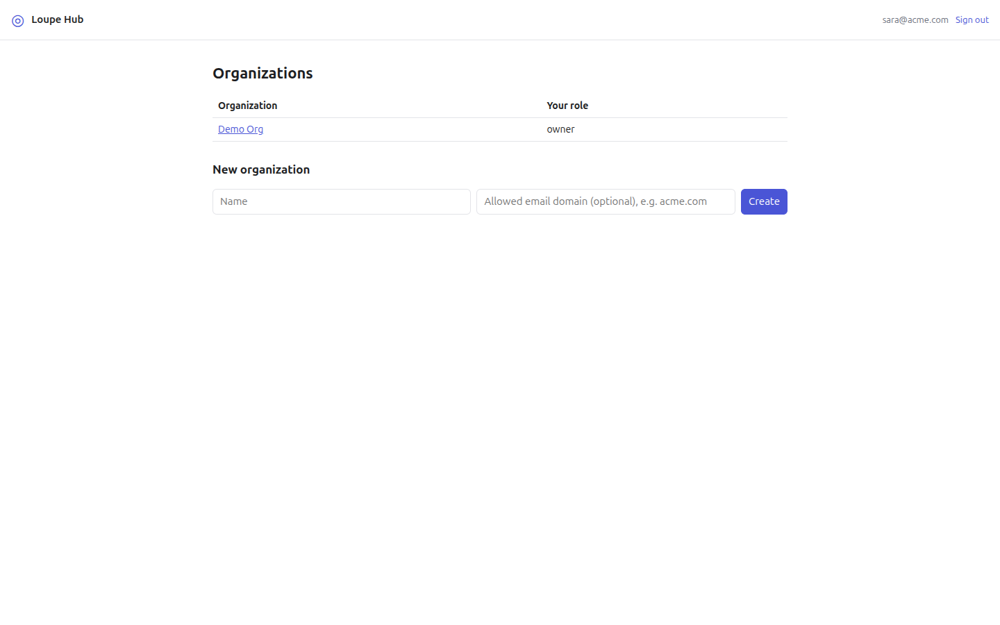
- Open the organization. You should see its members and projects.
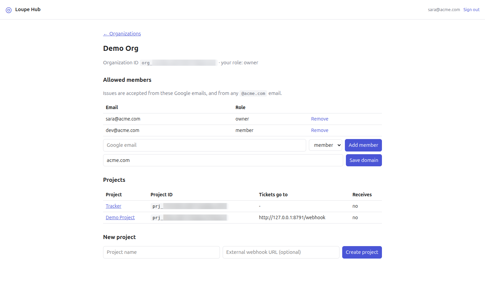
- Type a project name, for example
Tracker, and click Create project. You should see the project page with the card Copy now. These secrets are shown only once. Hub shows the secrets only when it creates or rotates them, so copy them now.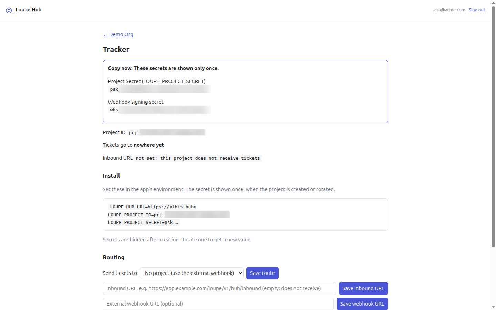
- Go back to the organization and open the project. You should see the project page without the secrets.
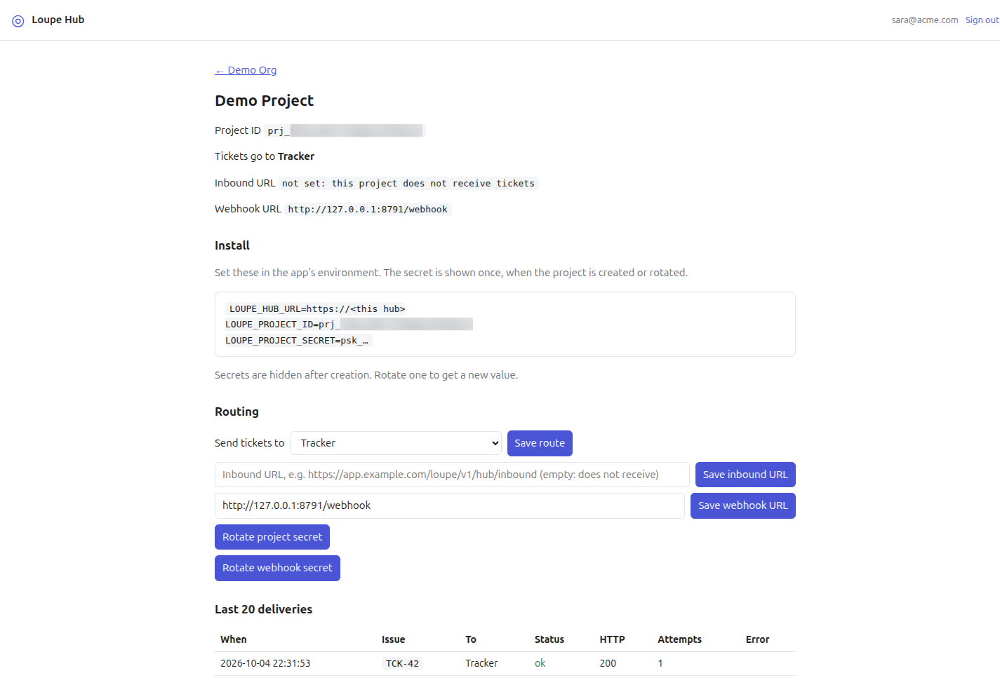
To run Hub for others, set HUB_SESSION_SECRET (required when
NODE_ENV=production). See Self-host Hub.
Routing
Hub checks the signature, the body and the submitter, then picks the first route that applies:
- Destination project. If the project has a destination with an inbound URL, Hub
delivers there, signed with the destination's secret and the
X-Loupe-Hub-Projectheader. - Webhook fallback. Otherwise, if the project has a webhook URL, Hub delivers there, signed with the webhook signing secret.
- Nowhere. Otherwise Hub answers
202 {id, delivery: "none"}.
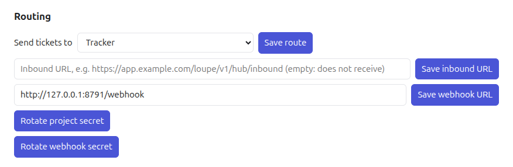
Two-way sync
After a project-to-project delivery, both apps hold the ticket. The receiving app owns the status:
when it changes there, the sender's card moves to the same stage and its chip shows the remote
state, for example → Tracker · TCK-42 · In progress. Replies travel both ways. A ticket
sent to an external webhook is one-way and cannot receive updates.
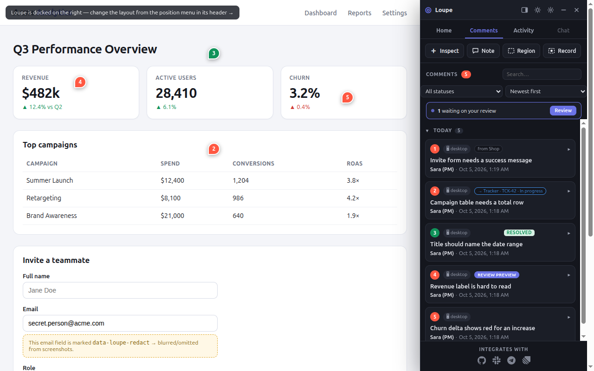
Security summary
- Every request in both directions is signed with HMAC-SHA256 over
<timestamp>.<raw body>. Timestamps more than 300 seconds off are refused. - Hub stores secrets in plain text, because it must sign with them. Protect its database.
- Dashboard sign-in uses Google with a verified email; the
hub_sessioncookie isHttpOnly; Secure; SameSite=Lax. - 0.14.1 Hub refuses to deliver to private, loopback and link-local
addresses.
HUB_ALLOW_PRIVATE_URLS=1turns this off, for local development only. - 0.14.1 A reply URL is kept only when its path ends in
/v1/hub/inboundand it has no credentials. When the sending project has an inbound URL registered, the reply URL must also have the same origin as that inbound URL.
The two items marked 0.14.1 are not in Hub 0.14.0 or earlier.
Read more: How Hub works · Self-host Hub · Connect apps · Hub reference.
Explanation
Architecture
A summary. The full design, with diagrams, is in ARCHITECTURE.md.
Packages
| Package | Role | Reference |
|---|---|---|
@loupekit/shared | Types, the five stages, normalizeUrl(). | shared.md |
@loupekit/sdk | The widget. | sdk.md |
@loupekit/server | The API on port 8787. Request bodies are capped at 12 MB for JSON and 60 MB for blob uploads. | server.md (all routes) |
@loupekit/dashboard | The triage board. | Dashboard |
@loupekit/mcp | MCP server and bridge. | mcp.md |
@loupekit/extension | Chrome MV3 extension. | extension.md |
@loupekit/hub | Optional ticket router, port 8790 by default. | hub.md |
Re-anchoring
Each pin stores a fingerprint, a set of properties that identify its element: tag, CSS path,
XPath, test id, text, attributes and position.
On every load, a unique test id or id wins at a score of 0.98. A CSS path rooted at a stable id
wins at 0.90. Otherwise Loupe scores candidates: the elements at the stored
CSS path and XPath, every element with the same tag, and, when the pin has text, elements with the
same text, a scan that stops at 4,000 candidates. Below 0.5, the pin detaches and shows
"moved" instead of pinning to the wrong element. Give important elements a
data-testid. A region anchors to the smallest ancestor that covers at least 60% of it.
Authentication
The Node server accepts an admin (the X-Loupe-Admin header equals the project secret)
or a user (the X-Loupe-Hmac header equals HMAC-SHA256 of the user id with the project
secret). Your server computes the HMAC, so the browser never sees the secret. The Laravel package
uses the session and its gates instead. See
Authentication and privacy.
URL normalization
normalizeUrl keeps the path and query, drops tracking parameters such as
utm_*, gclid and fbclid, sorts the rest and removes one trailing
slash. So /checkout?utm_source=x and /checkout share one set of comments.
Screenshots and storage
The SDK uploads each capture to POST /v1/blobs and stores only the returned URL. The
server keeps blobs under LOUPE_BLOB_DIR; the Laravel package uses a filesystem disk.
Seams
You can replace request headers and credentials, capture functions, panel tabs,
the generate function, integration providers, the database (DATABASE_URL), and, in
Laravel, the event listeners and resolvers. The SDK picks its storage itself: the HTTP adapter
when you pass apiBase, localStorage otherwise. The storage adapter is an
internal interface, not an option.
Data model
The Node server stores projects, comments, thread messages, thread participants, reactions,
notifications, working branches, repo URLs, integrations, integration mappings and integration
deliveries. The Laravel package uses loupe_comments, loupe_messages,
loupe_reactions, loupe_notifications and loupe_activity.
Reference
Testing
One Vitest run covers the TypeScript packages: run npm test from the root. The Laravel
package uses PHPUnit with Orchestra Testbench: run composer test in
packages/laravel. The 100% line-coverage gate, which CI runs, is
composer run test:coverage-100. A "stranger test" installs the package
into a new Laravel app the way a first-time user would.
TESTING.md →
Reference
Releasing
Every package carries the same version and follows Semantic Versioning. Record each change under
## [Unreleased] in CHANGELOG.md. Pushing a v* tag creates the
GitHub Release, publishes @loupekit/shared, @loupekit/mcp and
@loupekit/sdk to npm, mirrors them to GitHub Packages under the
@mohamed-ashraf-elsaed scope, and forwards the tag to the Laravel split
repository for Packagist. A push to main publishes canary builds under the
next tag.
RELEASING.md →
How-to
Contributing
Clone the repository, run npm install and npm run build, then run the
JavaScript and Laravel tests before you change anything. Add a changelog entry and open a pull
request against main.
CONTRIBUTING.md →
Reference
Changelog
Headlines of the last three versions. The full history is in CHANGELOG.md.
- A recording no longer ends without a reason. The pill shows elapsed
m:ss, the cap is 60s (recordMaxMs), a 16 MiB size guard (recordMaxBytes) keeps the clip shippable, and an automatic stop says why. - The widget is hidden while recording, so the panel, launcher and pins are no longer filmed.
- The panel joins the browser top layer (a
popover), so a host app popover cannot cover it. A modal<dialog showModal()>still wins — the browser paints it above every top-layer element. - Submitting no longer hangs on "Saving…" when a save fails, and is faster: the element screenshot is captured in the background and the media upload in parallel.
- A region comment no longer carries a container's whole text in its anchor, which read as noise on a ticket.
- Hub refuses private addresses. Loopback, private, link-local and other non-public hosts are refused.
HUB_ALLOW_PRIVATE_URLS=1turns this off, for local development only. - Hub keeps a reply URL only when it is the package's receiver: a path ending in
/v1/hub/inbound, no credentials, and the origin of the inbound URL when one is registered. - Fixed:
npx -y @loupekit/mcpstarts again,get_recent_eventsworks, andupdate_statusrefusesresolved. - Docs: the documentation was rewritten as tutorials, how-to guides, reference and explanation.
- Act from Home. Resolve (or Reopen), Open and Delete on each Recent row. Delete asks "Confirm delete" first.
- Status filter and sort order on Comments. Both are remembered per browser.
- Collapsible day groups. Click a day header to fold it.
- Fixed: resolving, reopening or deleting now updates the All list and the Home feed at once.